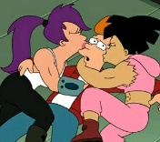

align (устарел) - способ выравнивания изображения Значения align: absbottom - выравнивает нижнюю кромку изображения с нижней кромкой текущей текстовой строки absmiddle - выравнивает центр текущей текстовой строки с центром изображения baseline — выравнивает нижнюю кромку изображения с базовой линией текущей текстовой строки.  bottom — выравнивает нижнюю кромку изображения с базовой линией текущей текстовой строки. left — выравнивает изображение по левому краю документа. Прилегающий текст обтекает изображение справа. right — выравнивает изображение по правому краю документа. Прилегающий текст обтекает изображение слева. texttop — выравнивают верхнюю кромку изображения с верхней линией текущей текстовой строки. top — выравнивают верхнюю кромку изображения с верхней линией текущей текстовой строки.